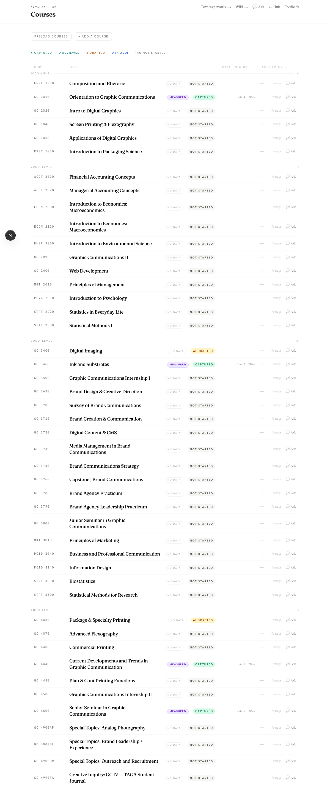
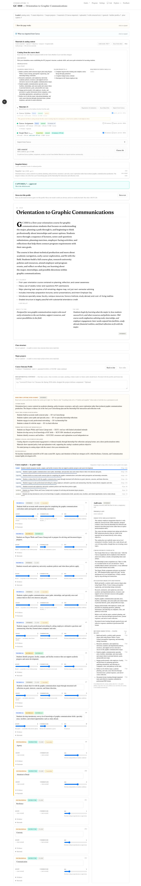
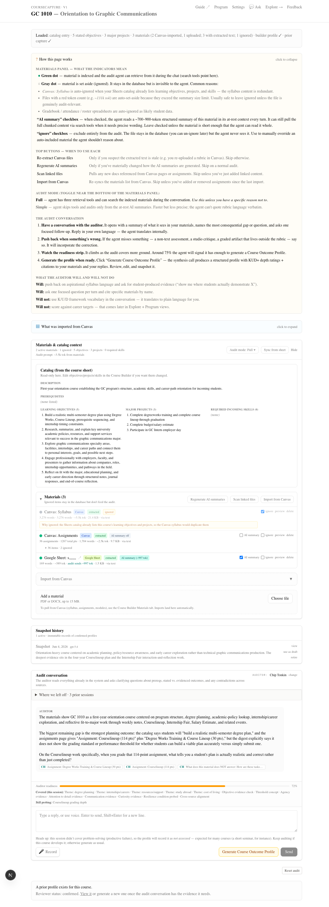
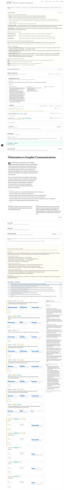

How this review was run
This was not a heuristic read of the code. The interface was driven the way a faculty member would drive it — a real browser navigating the running application, clicking through the actual workflow, with one genuine round-trip of the AI interview exchanged. Every screen below is a real screenshot from that session.
The evidence from that walkthrough was then evaluated independently by two personas, each with a deliberately different lens:
The enthusiastic instructor
A motivated, non-technical Graphic Communications professor who lives in InDesign, Canvas, and Google Sheets — the kind of early adopter who champions a tool that clicks and quietly abandons one that feels like work. Lens: first impressions, delight, "do I know what to do next," would I actually adopt this.
The adversarial critic
A senior UX evaluator running Nielsen's heuristics hard, specializing in cognitive load, error and empty states, and accessibility. Lens: friction, dead-ends, jargon, screen-reader and keyboard operability, and the exact moment a busy user quits.
Where the two independently agree, confidence is highest — those findings lead the list below. Where they diverge is the most interesting signal of all.
What we walked through
The journey a faculty member actually takes: open the course catalog, find their course, land on the capture page, run the AI "audit" interview, and review the resulting Know / Understand / Do profile.

/courses). Clean and legible: status pills, summary chips ("4 captured · 2 drafted · 40 not started"), one row per course. The entry point that works.
What is genuinely working
Both personas, including the skeptic, singled out the same thing: the interview is the product, and it is good. It read the instructor's actual Canvas assignment and asked a question sharper than most curriculum-committee discussions:
The AI, unprompted"When you grade that 114-point Courselineup assignment, what tells you a student's plan is actually realistic and correct rather than just completed?"
Answering it once moved a live readiness meter from 72% to 84%, reclassified the topic from "still probing" to "covered," and surfaced the next gap to chase — progress visibly pegged to the instructor's own words.

- Grounded & cited. Questions reference real materials, with citation chips — "it actually looked at my course," not a generic survey.
- Visible progress. The readiness meter makes the conversation feel cumulative and earned.
- Transparency. Per-material "why ignored" reasons, in-chat citations, and evidence provenance. The concept is right — the labeling is where it slips (below).
Where faculty stall
Ordered by agreement — both personas flagged the top items independently.
A returning user lands on a status line that reads like a system log, two collapsibles, a materials panel, a token budget, an "Audit mode" dropdown, and four buttons — with the actual interview below the fold and no hierarchy telling them what to do first.
Fix → A goal-first entry: one primary call to action ("GC 1010 has 3 materials loaded — Start the interview"), with materials and settings collapsed behind "Advanced." Collapse the status line to a single expandable row.
The review panel presents ~29 sliders, each equally demanding of attention. The instructor's honest reaction: "the AI just did this — why am I redoing it?" Every score looks equally weighted, so the panel reads as a second job rather than a quick confirmation.
Fix → Collapse each competency to its name + overall band, expanding on click. Surface the AI's top three suggested adjustments and trust the rest by default — let faculty do the 20% of review that carries 80% of the value.

To faculty, "audit" means a financial review or a no-credit enrollment — neither primes the right mindset. Add "auditor readiness," "at-rest context," raw token counts, and "Audit mode: Full," and the user is translating on every encounter. The evidence tags INFERRED ×8 read like an error count, not a transparency feature.
Fix → Rename: audit → interview, auditor readiness → topics covered, and the tags → "AI inferred / Found in materials / You said." Replace token counts with plain-language signals ("Large — may slow the interview").
"~3.5k tok," red/amber token coloring, and the "Audit mode" selector appear before the user needs them, with no plain-language meaning — and the token figure even reads as though something might be billed.
Fix → Demote these behind a "why?" tooltip; expose interview depth at the moment the interview starts, not on the landing.
Accessibility — the critic read the source
Concrete, code-grounded, and several of these overlap items already on the project's known-debt list:
The 29 range inputs have no programmatic label — a screen reader announces a bare "slider" with no competency or dimension name. The evidence chips render as non-focusable <span>s with a hover-only tooltip, so keyboard users can't reach what the tags mean. Validation errors surface raw schema paths (competencies › 3 › evidence_k) instead of human labels.
Fix → Add aria-label per slider (competency + dimension + value); make the evidence chips focusable; map validation errors to plain labels ("Competency #4 — Know evidence is required"). Add a "skip to Save."
Path forward
Split into changes that are small and high-leverage versus ones that warrant a design pass.
| Change | Why | Effort |
|---|---|---|
| Rename the worst jargon (audit → interview; the three evidence tags; token counts → plain language) | Removes the single largest source of friction for non-technical faculty; pure copy change | Quick |
| Goal-first landing — one CTA, collapse density behind "Advanced" | Closes abandon point #1; the first-impression that decides adoption | Quick–Med |
Slider aria-labels + focusable chips + humanized validation errors | Real accessibility; clears existing known debt in one pass | Quick |
| "Thinking…" indicator during the 9–12s AI turns | The interview is loved; a live working signal keeps it feeling responsive (also on the known-debt list) | Quick |
| "Quick review" mode — surface the AI's top-N suggested score adjustments; trust the rest | Closes abandon point #2; turns the 29-slider wall into a confirm-a-few flow | Medium |
| Step separation — Materials → Interview → Review, instead of one long scroll | Reduces cognitive load structurally; relevant content near the top of each stage | Larger |